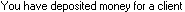

from sikuli import * import logging import csv import myTools import names_Init #---------------------------------------------------# def fCreate_OnePayToAccount(pClient,pCliNum,pMonth,pAmount): #---------------------------------------------------# logging.debug('- Create_OnePTA: ' + str(pMonth) + "-" + pClient + " = " + str(pAmount)) # new payment type("n",KeyModifier.CTRL) myTools.waitForTransEntry() # type (skip) type(Key.TAB) # deposit slip (skip) type(Key.TAB) # client myTools.enterClient(pClient) # skip account myTools.pressTAB(1) # date payDate = str(pMonth) + "/28/" + Settings.dataYear type(payDate) type(Key.TAB) time.sleep(1) # skip check number type(Key.TAB) # Amount type(str(pAmount)) type(Key.TAB) time.sleep(1) # Description type("a",KeyModifier.CTRL) type(pClient + " - " + str(pCliNum) + " - " + payDate) type(Key.ENTER) time.sleep(1) type("s",KeyModifier.CTRL) time.sleep(1) if exists(): type("n") time.sleep(1) #---------------------------------------------------# def fCreate_PaymentsToAccount(pMonth): #---------------------------------------------------# myTools.sectionStartTimeStamp("paystoaccount" + str(pMonth)) logging.debug('Create_PaysToAccount: ' + str(pMonth)) allClients = names_Init.fInit_Clients() count = 0 myTools.getFocus() # open funds list type("f",KeyModifier.CTRL) myTools.waitForFundsList() # create PTA for first 5 clients and then every 6th client for oneClient in allClients: count += 1 if (count in range(6)) or ((count + pMonth) % 6 == 0): ptaAmount = 25 + pMonth/float(100) fCreate_OnePayToAccount(oneClient,count,pMonth,ptaAmount) else: logging.debug('-- skip: ' + str(pMonth) + "-" + oneClient) type(Key.F4,KeyModifier.CTRL) time.sleep(1) type(Key.F4,KeyModifier.CTRL) myTools.sectionEndTimeStamp()